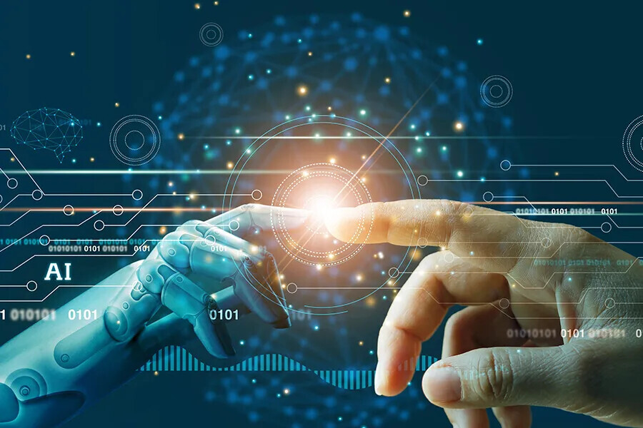

Aprende más sobre la IA
Por si te quedastes con ganas de saber más acerca de la IA, aquí encontraras más información acerca de ella.
¿Qué es una inteligencia artificial (IA)?
Una IA, o inteligencia artificial, es un área de la informática que se enfoca en crear sistemas capaces de realizar tareas que normalmente requieren inteligencia humana. Esto incluye aprender, razonar, resolver problemas, comprender el lenguaje natural, y reconocer patrones, entre otras cosas.
Hay diferentes tipos de IA, que van desde sistemas simples que realizan tareas específicas (como asistentes virtuales) hasta modelos más complejos que pueden aprender y adaptarse a nuevas situaciones. Algunos ejemplos de aplicaciones de IA incluyen:
• Asistentes virtuales: Como Siri o Alexa.
• Recomendaciones: Como las que ves en plataformas de streaming o tiendas en línea.
• Traducción automática: Como Google Translate.
• Reconocimiento de voz y imagen: Usado en seguridad y en dispositivos móviles.
¿Cómo funcionan?
Aunque los detalles varían según las técnicas de IA, el principio fundamental gira en torno a los datos. Los sistemas de IA aprenden y mejoran a través de la exposición a grandes cantidades de datos, identificando patrones y relaciones que los humanos pueden pasar por alto.
Este proceso de aprendizaje a menudo implica algoritmos, que son conjuntos de reglas o instrucciones que guían el análisis y la toma de decisiones de la IA. En el aprendizaje automático, un subconjunto popular de IA, los algoritmos se entrenan con datos etiquetados o sin etiquetar para hacer predicciones o categorizar información.
El aprendizaje profundo, otra especialización, utiliza redes neuronales artificiales con varias capas para procesar la información, imitando la estructura y la función del cerebro humano. Gracias al aprendizaje y la adaptación continuos, los sistemas de IA son cada vez más expertos en realizar tareas específicas, desde reconocer imágenes hasta traducir idiomas, etc.
Ventajas de la IA
Eficiencia: Realiza tareas más rápido que los humanos.
Precisión: Reduce el error humano en tareas repetitivas.
Acceso a grandes volúmenes de datos: Puede analizar enormes conjuntos de datos para encontrar patrones.
Mejor toma de decisiones: Proporciona análisis y previsiones basadas en datos.
Desafios y desventajas de la IA
Desempleo: La automatización puede reemplazar trabajos humanos.
Bias:Los algoritmos pueden perpetuar o amplificar sesgos presentes en los datos.
Privacidad: Manejo de datos sensibles puede llevar a problemas de seguridad.
Dependencia: Riesgo de confiar demasiado en la IA.
Futuro de la IA
Se espera que la IA continúe evolucionando, con avances en áreas como la IA general, la ética de la IA, y su integración en más aspectos de la vida diaria. La colaboración entre humanos e IA podría abrir nuevas oportunidades y mejorar la calidad de vida.
Aplicaciones de la inteligencia artificial (IA)
Cuidado de la salud: Diagnóstico médico, análisis de imágenes, y descubrimiento de fármacos.
Finanzas: Análisis de riesgos, detección de fraudes, y trading automatizado.
Transporte:Vehículos autónomos y sistemas de tráfico inteligentes.
Atención al cliente: Chatbots y sistemas automáticos para resolver consultas.
Tecnicas y metodos:
Aprendizaje automático (Machine Learning): Algoritmos que permiten que las máquinas aprendan de los datos y mejoren con el tiempo.
Redes neuronales: Modelos inspirados en el cerebro humano, utilizados en tareas complejas como el reconocimiento de imágenes.
Procesamiento del lenguaje natural (NLP): Permite que las máquinas comprendan y generen lenguaje humano.
Robótica: Integración de IA para controlar máquinas físicas.